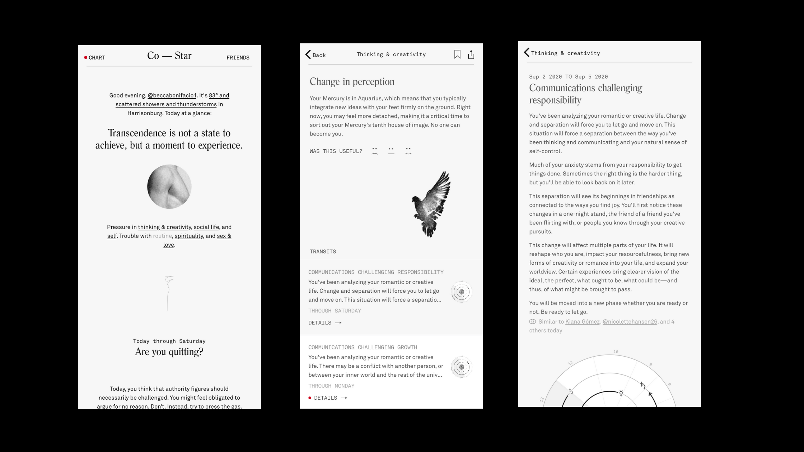

Astrology is a concept that has been around for nearly all of human existence. Although astrology is typically boiled down to a sun sign, that is, one of 12 constellations the sun is positioned in during a 20-22 day period, there is so much more to the ideology. Those who don’t resonate with their sun sign often write astrology off as a “fake science” or a way for individuals to evade responsibility for their negative personality traits. The app, Co-Star Astrology, works to challenge that mindset by providing an extensive chart breakdown for each user, alongside how current planetary and star positions can affect you and your loved ones. Co-Star allows you to add friends, check compatibility reports between these relationships, receive daily horoscopes, and understand how current planetary relationships may affect you in your day to day. While Co-Star is working to help individuals understand the dynamic concept that is astrology, there are still many aspects of this app that lack transparency and complicate user experience. This app flow redesign will work to critically analyze the current setup of Co-Star and provide changes to features in order to best answer the following design question:
According to Co-Star’s App Store description, “Co-Star is a hyper-personalized social experience bringing astrology into the 21st century.” Co-Star ultimately attempts to boil astrology down to short snippets of information that a novice astrologer can clearly understand and relate to. The app is meant for beginners and professionals alike, but is intended to provide an easy layout for the best possible user experience. Although this is their initial goal, from my own personal experience and user research, Co-Star could be more user friendly in terms of design, layout, and overall features.
In order to make Co-Star a more accessible app, I conducted research to see what users love and hate most about the app. My research was conducted via email and my personal social media platforms. The majority of responses are from college students ages 18-22, which is a pretty accurate representation of Co-Star’s typical market. From my 30 received responses, I found that users take the most advantage of the following features:
While those were the most utilized features, nearly all responses stated some form of struggle with user accessibility. Of my 30 user responses, 15 expressed specific concerns with the app layout. In addition to this, 8 users mentioned struggles with fully understanding their personal birth charts and planetary positions. Users cited very vague explanations of transits and expressed concern with their ability to read their personal birth chart as well.
43.3% of users stated that the most important feature of Co-Star is daily push notifications. While 13 users felt this way, 11 contradicted this by stating that the daily notifications were their least favorite app feature. Due to this conflict, my redesign will develop a plan to address these concerns while working to keep this feature in place for users who find it important.
When asked to rate their overall experience with Co-Star, 56.7% of responses (17 users) scored it as a 3 on a scale of 1-5. From a developer’s perspective, this is merely average and makes it abundantly clear that Co-Star needs quite a bit of improvement. Whether it be a struggle to understand the overall layout, difficulty understanding placements or dislike for specific features, Co-Star Astrology is not currently in it’s most user friendly form. Throughout the next section I will attempt to identify major Pain Points and work through solutions on how to fix them.
From the conducted user research and my own personal use of Co-Star and competing applications, I have come up with three main pain points. These can be defined as areas where users struggle the most with the app, and are ultimately the most important features to fix in an effort to make the app more user friendly.
In an effort to rework Co-Stars interface, I had to first understand how to navigate through the application. I worked to create a wireframe that accurately portrays all offered features and how users can navigate within the app.
While a basic structured wireframe like the one above does not seem too confusing, the actual design of the application makes it difficult to see all the app has to offer. Many features are hidden within one another and users either have difficulty accessing them or don't know they exist. As an example, we are going to walk through how to access current planetary transits in the application. This is a feature that many users had no idea existed, and those who did had a great deal of difficulty understanding.

As you can see from the above image, the app contains a great deal of vague wording and confusing concepts. All underlined words are hyperlinked and by utilizing this feature, the user will be navigated through a multitude of pages that attempt to explain more difficult astrology concepts. This specific example brings users to a feature that explains how current transits are affecting users based on natal planetary placements. For professional astrologists, this is arguably the most accurate and useful concept within astrology, however many novice users don’t even know about this concept.
Since the original wording on the homepage never mentions transits, many users simply skip over this feature without a second glance. In an attempt to make this feature (and many others) more accessible, I have designed a new wireframe that restructures the application and will ultimately make it more user friendly:
As a means of making Co-Star a more accessible and user oriented resource, I have re-designed current features and added a few new ones that would better the app.
If users choose to navigate through “Chart," they will be brought to their personal chart, which features a new redesign to better execute all aspects of the natal chart. You will be able to read about your personal houses, planets, and signs, as well as an overall description of what all of these mean. A big struggle for novice Co-star users according to my user research was a lack of understanding of placements. By setting the app up in this new way, users should be able to easily understand their own personal placements as well as what they mean in a broader sense. The redesign will be more accessible and easy to navigate through, so users can choose to have a broader or more detailed interpretation of their chart. Users will also be able to save specific descriptions that may resonate, which can be found under the “saved” tab.
I have completely redesigned "Transits," in hopes of making this feature more accessible for users. Co-Star breaks transits up into six categories: thinking & creativity, social life, self, routine, spirituality and sex & love. In the current app setup, all transits are not typically accessible and there is a lack of explanation as to what placements cause this transit. By redesigning the “Transits” navigation in this way, users will be able to easily access each of these six transits. I also added a new feature called “time travel” where you can manually type in a past or future date and see what transits affected you during this time. You can also access your friend’s transits in the same way via this tab.
A new concept I added is “World.” This is a feature that Co-Star lacks and many other competing apps have in place. By navigating through “World”, users will be able to see placement of stars and planetary positions in the current sky, and how this may manifest in our society or their personal lives. From this tab you will be able to see how current transits may affect your birth chart personally, and can use this feature on your friends as well.
Lastly, users can navigate through “Friends” to interact with friends and family on the app. I kept this resource very similar to the current setup, as it didn’t appear to be one of the main problems for users. As you can see from the wireframe, you will also be able to access your friend’s personal transits and their interaction with the world via “friends” navigation. By providing the same features in multiple places, users will be more likely to utilize these features and have a more user friendly experience with the app.
One of the main reasons I chose to redesign this app is because of Co-Star’s chart breakdown. Co-Star opts to use a list-like breakdown of houses, planets, and signs. This can lead to a great deal of confusion as almost all other astrology apps and features use a circular natal birth chart. The latter choice is the better option as it more accurately depicts what the sky looked like during your time of birth and can show how these relationships may overlap. Although Co-Star is a great app for beginners, this feature can often set them up for failure, as they have no idea how to read a circular natal birth chart. After conducting user research, I discovered that many other users also struggled with this feature and had difficulty understanding the complete breakdown of their birth chart.
I attempted to redesign the birth chart feature completely to make a more dynamic and responsive birth chart. The birth chart will be circular and interactive. Users will be able to click on each specific placement to learn more about that sign, transit or placement. They will receive a brief description of what that aspect typically represents and how this can play into their chart. For more novice users, there will also be an easy to access key in the side panel to describe the different placements, transits and signs. A birth chart can be very confusing, and while Co-Star may have opted for this list view originally to help beginners, it ultimately hurts them in the long run. By providing an interactive chart that mirrors most other natal charts, users will have a better understanding of astrology, as well as their personal chart.
One of Co-Star’s most well-known features are daily horoscopes. This feature, better known as “Your Day At A Glance”, sends daily push notifications to users that consist of a short, but vague statement intended to be applied as a horoscope. Co-Star uses an artificial intelligence linked to NASA to send these out to users. After conducting my user research, I received conflicting opinions on this feature. Many users found this to be their favorite part of the app, and claimed to love getting these little messages. Others reported it as their least favorite feature, citing that the messages were too “vague,” “ominous,” or “not relatable.”
In an attempt to fix this, my redesign will allow users to have a choice in what horoscopes they receive. One option will be the same as the above example. These statements will be relatively vague and sometimes difficult to relate to but a relatively fun notification to receive. If this is a feature users don’t like, they will have one of two options. First, they can opt completely out of horoscopes. Many astrologers actually claim that daily horoscopes hold no real weight, therefore those who operate under this mindset or simply don’t enjoy the feature will be able to turn them off completely. The second option will be to receive horoscopes for your rising sign specifically. These horoscopes will be a little longer and will occur weekly as it’s harder to predict for a specific sign on a daily basis. This will still be a different feature from other astrology apps, as most give you horoscopes for your sun sign, however, most astrologers believe that you should read for your rising sign. This feature will give users a more concrete understanding of what their week will look like and will get rid of those pesky notifications.
Astrology has been an important and formative part of my life and through this case study I hope to make it more accessible for those who wish to learn about it. This app flow redesign works to take a beginner astrology app and provide users with a more organized and unique experience. Redesigning this app provided me with a deeper understanding of UX design and how important navigation is for any well-working platform. If you have any questions or concerns about my app redesign I encourage you to direct them to my email. Thank you for reading!